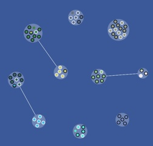
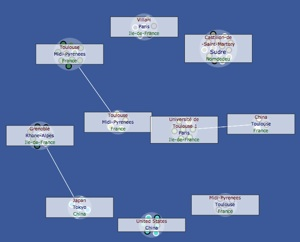

Friend circles
Friend Circles is a Facebook application designed to illustrate the interest of automatic community detection on social networks.
The idea is quite simple: by using the Facebook API, we get all the user’s friends, and the relations between them. From these informations, we build the ego-centered friend network.
On this network, we are now able to run any existing community detection algorithm. By default, we use iLCD, for it’s ability to detect overlapping nodes (nodes belonging to several communities).
Once the communities are built, we ask to the Facebook API the «tags» corresponding to people in each community, and display these tags if they seem representative.

What a network looks like. Friends are inside communities. Communities can be linked, if at least 1 person belongs to the 2 communities.
The same view, in «community mode». You can see above each community the tags that characterize it the best.

The application allows also some usual Facebook features, like seeing the wall of people and, more specifically here, of groups of people. You can also see each of you friends’ information, and even publish a message on your wall limited to people on a given group (due to Facebook limitations, this function is not perfectly integrated). A last feature is to automatically generate a Facebook friends list, which can be used later anywhere on Facebook.
With some technical improvements, this kind of tools could be integrated to existing social networks in order to facilitate their usage.
The application was designed by me and mostly developed by Alexandre Perles during his Master degree internship.
The source code is free and available on Github here. Thank you to inform me if you want to use it !